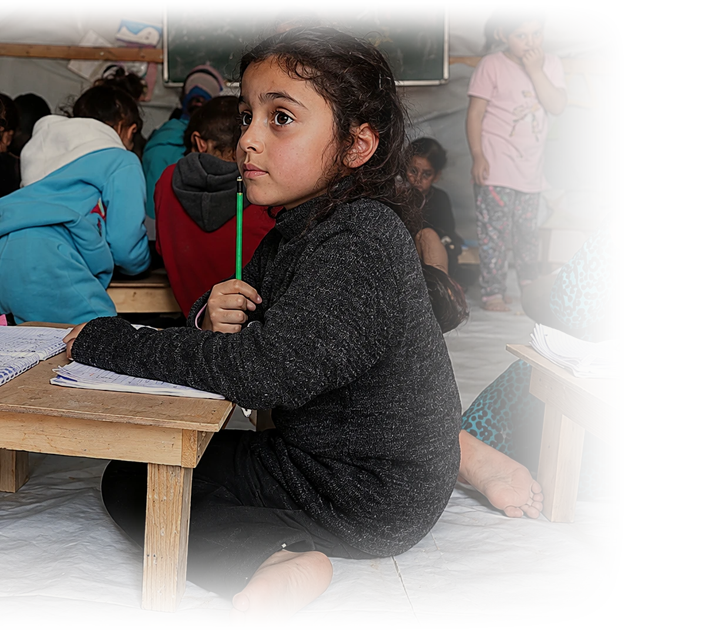
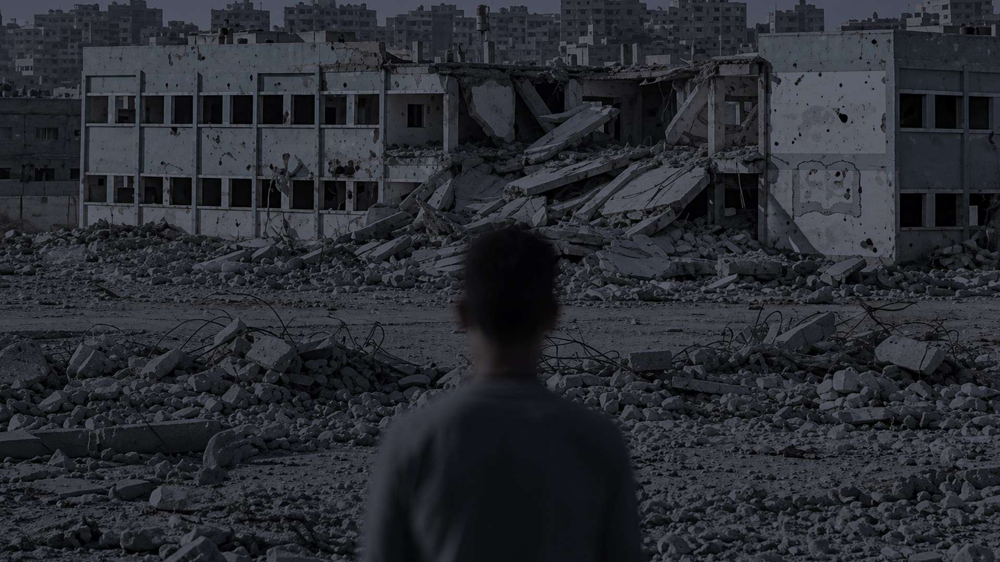
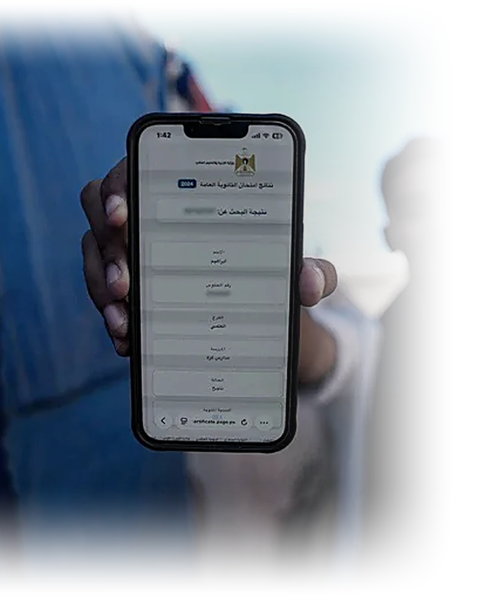
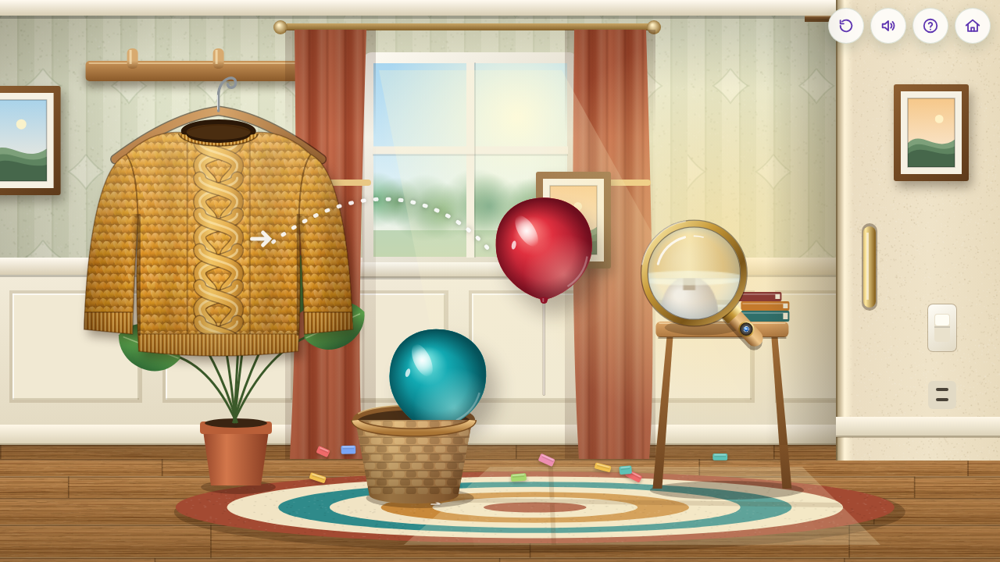
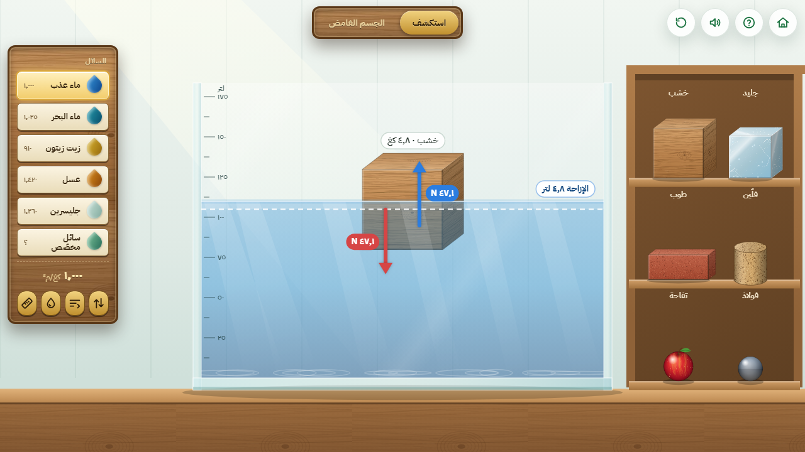
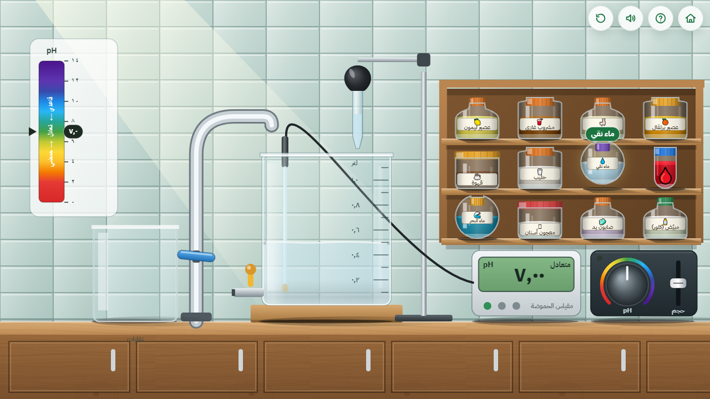

صورة: طالبة في نقطة تعليمية photos/01-hook.webp
ياريتكانعنا
مختبر
أمل · طالبة في غزة

صورة خلفية: مختبر مدرسي متضرر photos/02-lab.jpg
+0
ألف طالب
الصفوف 7 · 8 · 9
0%
من مختبرات المدارس متضررة

صورة: يد طالب تمسك هاتفاًphotos/03-phone.webp
هل يبقى المختبر داخل المدرسة؟
لماذا لا يكون
في يد الطالب؟
في يد الطالب؟
مختبر علوم تفاعلي على شكل لعبة
6 تجاربعلوم تفاعلية
الصف 7–8وفق المنهاج
بلا إنترنت دائميعمل على الهاتف
تعلّم بالاكتشافيعوّض الفاقد التعليمي



التجربة 1
الكهرباء الساكنة
افرك · قرّب · شاهد
التجربة 2
الطفو والغرق
اغمر · بدّل السائل · استنتج
التجربة 3
الرقم الهيدروجيني
قِس · أضف الماء · لاحظ
01الكهرباء الساكنة
02الطفو والغرق
03الرقم الهيدروجيني
04رؤية الألوان
05داخل الخلية
06الدارات الكهربائية
يجرّب
يخطئ
يعيد
يخطئ
يعيد
المرشد
بنفوش
يرشد الطالب بسيناريوهات جاهزة
تجربة الطفو
لماذا تطفو السفينة الضخمة ويغرق المسمار الصغير؟ تعال نكتشف!
لماذا تطفو السفينة الضخمة ويغرق المسمار الصغير؟ تعال نكتشف!
هل تستطيع أن تجعل البيضة تطفو؟ عندي فكرة مالحة!
قارب الورق ما زال يطفو بفضلك يا خبير الكثافة!
أول مرةعند العودةبعد الإنجاز
بنفوش يرشد · والنموذج يلاحظ
يُرصد أثناء اللعب
حركة اللمس والفأرة
التردد
زمن الاستجابة
التكرار
تجنّب التجارب
نموذج الذكاء الاصطناعي
مؤشرات للمتابعة
خوف أو قلق
تأخر تعلّمي
تميّز في التعلّم
طيف التوحد
توصية
للمعلم أو الأخصائي
فرز لا تشخيص
الأثر المستهدف
70,000
الفئة المستهدفة
10,000
خلال 6 أشهر
طالب من كل 7 يتعرف على النظام
غرب غزةالمرحلة الأولى
184 نقطةتعليمية بلا مختبر
5,000$رأس المال الأولي
الاستدامة
مصدران للإيراد
01
مؤسسات داعمة
جهات تعالج الفاقد التعليمي للأطفال المتأثرين بالكوارث والحروب، مثل UNDP ومبادراتها.
02
فريميوم
التطبيق مجاني للمدارس ومدراء المراكز وأولياء الأمور، والميزات المتقدمة والاستشارات بمقابل.
بيانات مجمّعة بمعالجة المختصين، تُشارك مع مؤسسات موثوقة مقابل عائد
لا نقدّم أداة فقط
نحن نفتح باباً
نحن نفتح باباً
لطفلة تتمنى مختبراً
لطالب يريد أن يفهم
لمعلم يكبر أثره حين تتوفر الأدوات
كل تجربة نصنعها اليوم قد تصبح غداً شغفاً… ثم معرفة… ثم قصة نجاح
ندعوكم لتكونوا جزءاً من هذا الأثر
شكراً لكم